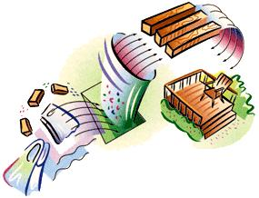

Recycled plastic finds
new life as lumber.
Dear Mother,
The redwood timbers I used for my raised beds need to be replaced, and someone suggested that I use recycled plastic wood. But I've also heard that the plastic leaches chemicals into the ground, and since this is a vegetable garden, I want to be as safe as possible. Any advice?
Barbara W.
A handful of manufacturers nationw ide are busy turning heaps of our plastic waste into durable "lumber." Know those bins in supermarket entries where you stuff used plastic grocery sacks? More and more, the contents are being sold to plastic lumber companies for recycling, instead of going to a landfill to resist decomposition forever.
Some companies, like the Colorado-based Ecodeck and Phoenix Recycled Plastics of Conshohocken, Pennsylvania, use 100% recycled plastics; others, including the Trex Company of Winchester, Virginia, mix reclaimed plastics with industrial waste hardwood fibers to produce artificial wood planking.
Intended mainly for outdoor use, plastic lumber is waterproof and inert and will never need replacing, unlike even the most thoroughly poison-impregnated (with copper and arsenic) conventional pressure-treated (PT) lumber. Termites can't eat it and molds won't infiltrate it. Nothing can soak in or leach out so it's ideal for raised beds.
We have used Trex lumber for planking outside decks and for building indoor-outdoor furniture. It is denser and heavier than softwood dimension lumber and lacks wood's natural s cents and textures. (and its knots, splits, warps and splinters). But it saws, planes, nails and accepts paint as well or better than wood. Left unfin ished, Trex weathers to a light silvery gray, similar to cypress or cedar.
The only comparative disadvantage we can see with Trex is that it lacks the long fibers of wood and so is unsuitable for load-carrying structural use, and must be well-supported using 16"-on-center or closer floor joists. This is irrelevant if using it in the garden, but a caveat that its maker always includes in case someone wants to purchase it for nonrecommended use.
While plastic lumbers are not biodegradable, they are completely recyclable. And they need none of the air-polluting evaporative stains, wood preservatives, mold- and mildew-killers and insect-deterrents needed to maintain a wood deck. Of course, you can't burn the short scraps in the fireplace - but you shouldn't burn pressure-treated lumber either, lest you, your kids, pets and wildlife breathe in heavy metal-poisoned smoke.
We found plastic lumber kind of clunky to work with... carries like deadweight, lacking the live springiness of wood. But so what? It will last forever and won't poison your earthworms, lettuce and tomato plants or you.
For information about Trex, dial (800) BUY-TREX or visit www.trex.com . Phoenix Recycled Plastics can be reached at (610) 940-1590 or on the Web at www.plasticlumberyard.com . Ecodeck is available through Environmental Building Products, Inc., (303) 470-7555; www.environmentalbldgprod.com
Dear Mother,
We are considering a pellet stove as a primary source of heat. However, a colleague told me that the pellet dust is a significant problem for people with asthma and other sensitive upper respiratory conditions, Is this true?
Donna R.
Wood pellets are made largely from clean, white-wood sawdust that is a byproduct of furniture or lumber production (on the West Coast from fir and cedar, on the East from mixed hardwoods). Manufacture is a two-part process: First, the raw material is dried. Then it is ground and forced through an extruder under pressure and sufficient heat to melt resins so they solidify on cooling into solid pellets.
Many people sneeze on breathing raw, resinous sawdust. But dust is not produced in the palletizing process, and the final product is firmly compacted enough so that it does not produce dust on being poured. Indeed, pellets are being poured today from the bag into stove hoppers located in a half-million living rooms worldwide. If dust were a problem, we'd have heard about it in many languages by now.
To perform properly in the auger- or gravity-feed system of a pellet stove, the fuel must be of a consistent dryness, size and pourability, and it must lack dust or fines (which can be a problem when using low-quality dry field corn, a popular pellet fuel substitute in many corn-growing areas). If you find any dust in your 40-pound bags of pellet fuel, demand your money back and get another brand.
Do you have a question that only MOTHER can answer? Log on to www.motherearthnews.com . In addition to our "Ask Mother" section, we now offer our best archived articles, bulletin boards and much more!
|
 |
|
|